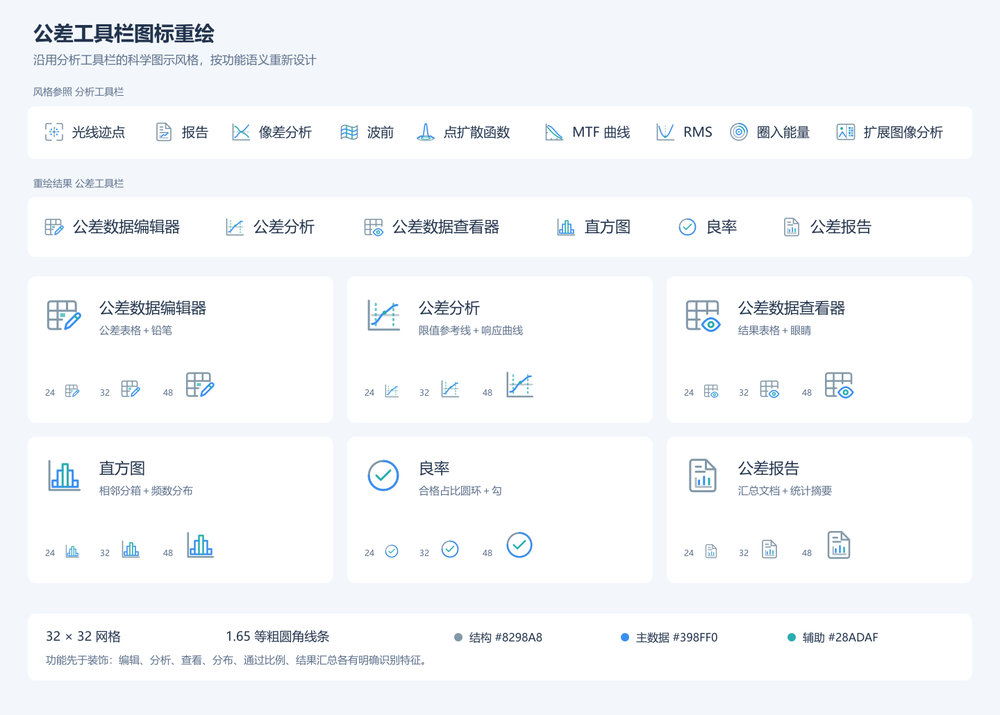

光学软件科学图示风格规范
Optical Scientific Outline · v1.3 · 2026年11月3日
本规范用于后续批量改图：按实际名称与功能设计，并同时满足五主题造型。当前为Optical Scientific Outline 1.3，光域采用钢铁侠式科技HUD，异世界保持剑与魔法世界观；古典炼金器具属于异世界语汇。
当前全部图标 · 逐项设计说明 · Word规范

首轮示例保留设计起点，当前五主题造型使用上方的完整图库。
1 风格定位
全程序实际功能图标采用细线科学示意图，先按名称和实际功能确定对象、动作、自变量与方法，再绘制轮廓。基础图形使用结构、主信息和辅助三种角色；221款语义图形覆盖332处入口与状态，五主题共1105份普通状态SVG。
普通、黑洞暗夜和像素保留已确认的基础图形。光域与异世界各有221款独立主题图稿，分别体现钢铁侠式科技HUD和剑与魔法世界。主题特色须服从功能识别，不能只换颜色或机械套相同徽章。首轮六个公差图标作为本规范的语义示例。
2 固定绘制参数
| 项目 | 统一规则 |
|---|
| 源画布 | viewBox="0 0 32 32"；独立 SVG 默认 32×32 |
| 线条 | stroke-width="1.65"；round 端点；round 连接 |
| 结构色 | structure #8298A8，用于表格、文档、边框、坐标轴 |
| 主数据色 | signal #398FF0，用于曲线、主要动作、统计数据 |
| 辅助色 | secondary #28ADAF，用于参考线、采样点、局部强调 |
| 次级结构 | 参考线和内部辅助结构可使用 0.5、0.55、0.65 透明度 |
| 主体与留白 | 主体通常位于 3.5…28.5；局部语义标记可延至 29.5，描边不得越出画布 |
| 几何参数 | 矩形常用圆角 2 或 2.5；点标记常用半径 1 至 1.8 |
| 显示尺寸 | 18、24、32 px为主要验收尺寸；28、40、48 px可作补充检查 |
| 缩放 | 图形与描边等比缩放；24 px 下描边约 1.24 px |
3 形体与配色语法
以对象轮廓为结构，将视觉注意力留给主要数据和操作。基础蓝青角色适用于普通主题；其他主题按自己的角色配色。一个图标可以只用结构与主信息，不机械凑齐三色。
曲线图共用左下坐标骨架，文档类共用折角纸张，数据类共用表格骨架。相同功能家族保持轮廓比例，不同操作使用明确标记，例如铅笔表示编辑、眼睛表示查看。
主体以轮廓为主，点标记和极小数据单元可使用同角色实心填充。轻量曲面和椭圆基底用于专业对象；仅光域图标允许受控钢色渐变、信号边光及中心高亮，不扩展到文字、按钮或科学数据。
32 px 下相邻独立线条的可见净空通常不少于 1.2 单位。仅有专业含义的交点、分箱边界和叠加标记可以接触；所有叠加必须检查是否粘连。
4 本批图标功能与图形
| 名称 | 实际功能 | 图形含义 |
|---|
| 公差数据编辑器 | 定义并修改公差操作数、上下限和分布。 | 公差表格与铅笔；青色单元格指出正在编辑的数据。 |
| 公差分析 | 运行灵敏度和 Monte Carlo 扰动评估。 | 响应曲线与公差区间参考线；表达输入扰动与评价结果的关系。 |
| 公差数据查看器 | 浏览公差分析产生的数值结果。 | 结果表格与观察眼睛；保留表格家族并与铅笔明确区分。 |
| 直方图 | 查看 Monte Carlo 评价值按数值区间分箱后的频数。 | 等宽且相邻的分箱；柱高呈分布形态，避免画成离散类别柱状图。 |
| 良率 | 合格样本数占全部 Monte Carlo 试验数的比例。 | 占比圆环与合格标记；图形仅表示比例概念，不显示实际良率。 |
| 公差报告 | 汇总公差设定、灵敏度、随机试验与统计结果。 | 折角文档与微型统计图；沿用分析报告的文档骨架。 |
5 语义边界
直方图表现数值区间内的频数。图标采用等宽相邻分箱，并以柱高形成分布形态，避免使用间隔很大的类别柱状图或用普通折线代替。
良率表达合格样本数相对全部试验数的比例。圆环承担占比含义，勾承担合格含义；环形角度只作示意，不表示某个固定百分比，也不暗示所有试验合格。
公差分析入口包含灵敏度和 Monte Carlo 计算。限值参考线与响应曲线表示参数扰动对评价的影响，不采用与功能无关的心电波形、闪电或装饰性折线。
公差报告承载设定和结果汇总。文档轮廓与统计摘要共同表达报告，不用合格勾替代报告内容，以免把“报告”误解为“全部通过”。
6 界面与五主题配色
图标在32×32源网格内居中。工具栏保持左图右字，间距、分隔线、下拉箭头及按钮背景由现有控件负责。名称、命令、操作、布局、用户主题选择、品牌及物理光线和数据颜色保持。
普通、黑洞暗夜和像素使用基础几何；光域与异世界解析各自的独立主题SVG。以下是功能图标的角色配色，与界面底色和主按钮颜色分别维护。
| 主题 | 功能图标角色 |
|---|
| 普通 Light | 结构 #8298A8；主信息 #398FF0；辅助 #28ADAF |
| 黑洞暗夜 Dark | 结构 #A5978B；主信息 #F0AE79；辅助 #D5B89C |
| 光域 Lumen | 钢色结构渐变，基准 #6C8D9D；主信息 #78DCFF；辅助 #C4F5FF，参考点金色 #D6AC6B |
| 异世界 Isekai | 旧铜结构 #A18B5F；浅金主信息 #EACC8B；灰绿辅助 #A6B48B |
| 像素 Pixel | 结构 #2F5169；主信息 #B8283A；辅助 #196937 |
7 SVG 文件约定
文件使用UTF-8和英文小写连字符命名。每个稳定功能ID对应可编辑矢量；保持viewBox="0 0 32 32"、1.65圆端点描边及structure、signal、secondary和对应fill角色。图形与描边等比缩放，不设置non-scaling-stroke。
SVG背景透明，不嵌入位图、字体、外链、脚本、标签或按钮背景。普通、黑洞、异世界和像素保持平面轮廓；光域可使用本地钢色渐变与受控信号光晕，定义使用固定32网格的userSpaceOnUse坐标，不能遮住轮廓或使水平笔画消失。
独立SVG为对应主题的普通状态。img显示的文件使用已导出的主题资源，不能假设外部页面类名会进入文件内部。程序主题切换会重新选择资源及画刷；禁用、强调区与对比度回退使用可读前景，并关闭光域材质。
独立文件保留title，宿主提供可访问名称和必要提示。主题造型不能改变图形表达的对象、动作、自变量或方法，也不能覆盖品牌或物理数据的颜色。
8 后续批量改图流程
- 逐项写明实际功能、对象、动作、输入或输出。功能不清楚时先核对界面或代码，不先画图。
- 按稳定语义ID设计基础图形，复用有相同含义的部件。不同分析的响应、自变量与计算方法必须可区分，九项MTF不能共用通用折线或扫描框。
- 为图元指定结构、主信息和辅助角色；保持32×32网格、1.65圆端点线条及透明背景。
- 为光域和异世界分别设计有意义的主题造型。光域使用科技HUD；异世界在剑与魔法世界中选择魔导书、卷轴、法阵、符文或炼金器具。
- 在18、24、32实际尺寸检查五主题、透明背景、功能差别、禁用与强调状态；主题切换和返回时轮廓与可读性应正确。
- 同步功能对应表、源资源及主题清单、完整图库和SVG包；应用命令ID、文案、布局和物理数据保持。
- 同步本Word及网页规范、仓库语义/本地图标/主题包/UI规范、变更记录和长期偏好。直接修正冲突的旧正文，历史资料标明适用版本。
9 交付检查清单
- 名称与图形可一一解释，不依赖随机装饰；编辑与查看、直方与曲线、良率与报告不会混淆。
- 不同分析保留响应、自变量和方法的区别；MTF频率下降、穿焦峰值、随视场变化可区分。
- 32×32网格、1.65圆端点描边、角色类名、透明背景及留白正确。
- 18、24、32尺寸关键特征可辨，无裁断、粘连、过密网格或意外重叠。
- 光域具有科技HUD的金属与冰蓝信号特征；异世界体现剑与魔法，炼金器具属于该世界。
- 五主题与禁用、强调、背景对比度回退正确；光域材质只作用于图标。
- 普通、黑洞及像素已确认图形与非图标资源保持，命令和物理数据语义保持。
- Word/网页/仓库规范、图库、SVG包、逐项对应表与记录一致。文档核对不计作产品测试通过。
10 可复用的改图说明
请按Optical Scientific Outline 1.3，以功能名称和真实操作确定对象、动作、自变量与方法，绘制32×32、1.65圆端点描边的透明SVG。普通、黑洞、像素沿用确认稿；光域使用钢色与冰蓝科技HUD；异世界保持剑与魔法，以魔导书、卷轴、法阵或炼金器具表达功能。18、24、32尺寸检查五主题及状态，同步规范、图库、SVG包和记录，保持命令与数据语义。
11 光域与异世界独立造型
光域是钢铁侠式科技HUD。枪灰与钢色形成金属构件，冰蓝青光用于主信号，切角面板、分段仪表环和精密刻线用于对象结构。有限的高亮与边光加强仪器质感，不把光域解释成柔光玻璃风格。图标内部刻线用于识别，不在界面上增加假读数、假进度或装饰计数器。
异世界的世界观固定为剑与魔法。指南采用魔导书，报告采用卷轴，编辑采用账册与羽笔，光瞳和波前采用法阵与符文刻线。古典炼金器具属于这个世界的专业语汇；不能把整套降为旧金配色的普通科学图。
主题含义与功能含义同时成立。恢复工程仍表达历史恢复，保存仍表达保存，分析仍保留响应、自变量与方法。基础加减、导航保持简洁，不强制每款出现剑、魔杖或同一徽章。
两套主题各有221款独立SVG，普通、黑洞与像素沿用基础图形。新增功能须在实际使用集和所有主题中补齐；当前完整清单以图库及功能对应表为准。
12 版本与维护记录
本规范当前为1.3。1.0建立六个公差图标的语义与细线规范；1.1统一功能图标角色和主题配色；1.2按实际功能重绘221款基础语义图形；1.3增加光域HUD与异世界剑与魔法的独立造型，并同步原有规范正文与维护记录。
当前交付目录为redesigned-icons-20261103，包含完整图库index.html、逐项设计说明.html、功能与图标对应表.csv、五主题svg目录及442份theme-masters。图标风格规范.docx与图标风格规范.html是本规范的同版副本。
最早的六图SVG及preview目录保留首轮设计对照，不代表当前五主题资源。公差图标与风格规范.zip及旧五主题1.2 ZIP属于历史交付；当前图标和规范使用按主题重绘图标_HUD与魔法_20261103.zip。产品原生与图库验证保留各自范围，文档同步不重新累计产品测试。